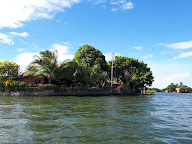

Naturaleza

Playas, volcanes, montañas, cultura, gastronomía y comunidades que no aparecen en las rutas tradicionales.

Lugares únicos, historias reales y experiencias auténticas.



Descubrí destinos, negocios locales y experiencias cerca de vos.
Contame qué querés vivir y te creo un itinerario personalizado con destinos, precios y mapa.
Planificar mi aventuraTecnología al servicio de nuestra gente y de la naturaleza.
Rutas responsables y áreas protegidas
Contacto directo con emprendedores
0% intermediación · Más oportunidades
Negocios verificados y turismo seguro
Tradiciones que siguen vivas
Lo que no sale en el mapa
Viví Nicaragua de una forma diferente.
“Una experiencia increíble. Conocimos lugares que no están en los tours tradicionales.”
“Todo fue muy fácil de planificar. La app nos ayudó a descubrir lugares auténticos.”
“Increíble la calidez de la gente y la belleza de Nicaragua. ¡Volveremos!”
¿Tenés un negocio turístico? Formá parte de nuestra red de anfitriones.